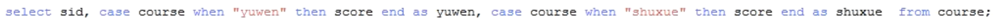

面试题主要有有三种类型：
1、自连接
2、行列转换
3、topN
第一题：
现有这么一批数据，现要求出：
每个用户截止到每月为止的最大单月访问次数和累计到该月的总访问次数
三个字段的意思：
用户名，月份，访问次数
A,2015-01,5
A,2015-01,15
B,2015-01,5
A,2015-01,8
B,2015-01,25
A,2015-01,5
A,2015-02,4
A,2015-02,6
B,2015-02,10
B,2015-02,5
A,2015-03,16
A,2015-03,22
B,2015-03,23
B,2015-03,10
B,2015-03,11
最后结果展示:
用户 月份 截止到当月的最大月访问次数 截止到当月总访问次数 当月总访问次数
A 2015-01 33 33 33
A 2015-02 33 43 10
A 2015-03 38 81 38
B 2015-01 30 30 30
B 2015-02 30 45 15
B 2015-03 44 89 44
结题思路：
1、创建第一张普通表：
create database if not exists exercise;
use exercise;
create table if not exists visit(name string, month string, visit int) row format delimited fields terminated by ",";
load data local inpath "/home/hadoop/visit.txt" into table visit;
select * from visit;
2、既然要求累计到该月的总访问次数和截止到每月为止的最大单月访问次数，则每次累计到当月的时候，都需要按
照当月和用户作为分组条件。以便于求累计到当月总访问次数 和 最大 访问次数
所以我们应该先求出每个用户在每个月份的总访问次数
create table month_visit as select name, month, sum(visit) as visit from visit group by name, month;
A 2015-01 33
A 2015-02 10
A 2015-03 38
B 2015-01 30
B 2015-02 15
B 2015-03 44
总结一个规律（指的是在hive中）：
如果一个sql语句是一个group by的操作， 那么select 后面的查询字段只能出现以下两种情况：
1、要么是group by后面的字段
2、要是聚集函数（如sum count,max min avg）
只能以上两种情况能作为字段跟在select后面，若跟了其他字段，则会报错
但在mysql中，有group by 子句时， 若是select字段后面跟了以上两种情况之外的字段，也不会报错，能正确运行出结果。一般来说（但也有许多情况不是这样）以上两种情况作为字段跟在select后面group by 子句才有意义，如果不是上面两种情况下使用group by，那么很多情况下不用group by 也能得到结果；但是较为复杂的sql语句比如多表连接时，不用group by，或者select字段后面不跟其他字段，就不一定能得到想要的结果，逼不得已要在使用了group by后，select后面要跟其他字段，那么在hive中就只能分成多条sql语句来写了，而mysql则没有这种苦恼。
3、再求出累计到当月的总访问次数sum + 最大访问次数max
要算累计到当月的总访问次数的话：
如果A用户累计到1月，得把 A，2015-01这个用户的这个月份的值 33 做为一组
如果A用户累计到2月，得把 (A，2015-01)(A，2015-02)这个用户的这两个月份的值 （33, 10） 做为一组
如果A用户累计到3月，得把 (A，2015-01)(A，2015-02)(A，2015-03)这个用户的这三个月份的值 （33,10,38） 做为一组
方法是可以创建一个新的字段month_b，用来表示当前累计到几月份，month_a则表示累计到的月份前的某个月份，visit_a对应的是month_a 月份的总访问次数，而visit_b对应的是month_b月份的总访问次数，则如果按照name和month_b还有visit_b分组, 那么就可以用sum(visit_a)求出累计到当月的总访问次数，而用max(visit_a)则可以求出截止到当月为止的最大访问次数
name month_a visit_a month_b visit_b
A 2015-01 33 2015-01 33
A 2015-02 10 2015-02 10
A 2015-01 33 2015-02 10
A 2015-03 38 2015-03 38
A 2015-02 10 2015-03 38
A 2015-01 33 2015-03 38
B 2015-01 30 2015-01 30
B 2015-02 15 2015-02 15
B 2015-01 30 2015-02 15
B 2015-03 44 2015-03 44
B 2015-02 15 2015-03 44
B 2015-01 30 2015-03 44
如果有上表中这样的数据存在，表名叫step2，那么就可以写如下查询语句，从而得到所有需要的字段
用户 月份 最大访问次数 截止到当月的总访问次数 当月总访问次数
select name , month_b, sum(visit_a) as sum_visit, max(visit_a) as max_visit, visit_b from step2 group by name , month_b, visit_b;
那么问题来了，如何构造出上表中样式的数据呢？
用month_visit表做自连接，自连接的条件可以是name_a=name_b，但自连接中有很多无效的数据，如果只有三个月份，则A用户的所有自连接结果如下所示，共3*3=9条数据，（后面打√的数据就是有效数据，其他是无效数据）
前面name_a month_a visit_a是自连接的一张表，后面name_b month_b visit_b是自连接的另一张表
自连接表取名叫self_join
name_a month_a visit_a name_b month_b visit_b
A 2015-01 33 A 2015-01 33 √
A 2015-02 10 A 2015-01 33
A 2015-03 38 A 2015-01 33
A 2015-01 33 A 2015-02 10 √
A 2015-02 10 A 2015-02 10 √
A 2015-03 38 A 2015-02 10
A 2015-03 38 A 2015-03 38 √
A 2015-02 10 A 2015-03 38 √
A 2015-01 33 A 2015-03 38 √
这个时候观察数据就知道，只要month_b 大于等于month_a的记录，就是有效数据
所以前面的sql语句经过改善，则可以写成如下形式
select name_b , month_b, sum(visit_a) as sum_visit, max(visit_a) as max_visit, visit_b from self_join where month_a <= month_b group by name_b , month_b, visit_b;
那么接下来的问题就只剩下将month_visit做一次自连接即可了：
将自连接后的结果创建为视图self_join，再在视图self_join上执行一次上面的查询语句，即可得到最终的结果 ：
create view self_join as select
a.name as name_a,
a.month as month_a,
a.visit as visit_a,
b.name as name_b,
b.month as month_b,
b.visit as visit_b
from month_visit a join month_visit b on a.name = b.name;
第二题：
// 建表语句：
CREATE TABLE `course` (
`id` int(11) NOT NULL AUTO_INCREMENT PRIMARY KEY,
`userid` int(11) DEFAULT NULL,
`course` varchar(255) DEFAULT NULL,
`score` int(11) DEFAULT NULL
) ENGINE=InnoDB DEFAULT CHARSET=utf8;
// 插入数据
// 字段解释：id, 学号， 课程， 成绩
INSERT INTO `course` VALUES (1, 1, 'yuwen', 43);
INSERT INTO `course` VALUES (2, 1, 'shuxue', 55);
INSERT INTO `course` VALUES (3, 2, 'yuwen', 77);
INSERT INTO `course` VALUES (4, 2, 'shuxue', 88);
INSERT INTO `course` VALUES (5, 3, 'yuwen', 98);
INSERT INTO `course` VALUES (6, 3, 'shuxue', 65);
即表格式如下：
id userid course socre
1 1 yuwen 43
2 1 shuxue 55
求：所有数学课程成绩 大于 语文课程成绩的学生的学号
求解
行列转换 :
这种比较不同记录行的某一列的数据大小，都有一种统一的方法解决，即进行行列转换，为什么要进行行列转换？什么是行列转换?
这种思想就叫做行列转换，因为行与行之间没办法比较大小，也就是说一条记录没办法和另一条记录直接比较某一列的值谁大谁小，而不同的列与列之间的数据，只要是同一类型，则可以随便比较了。毕竟记录是按行存储的，查询的时候也是一条记录一条记录查（一行一行查），所以不能比较。
所以要把两行中那个需要比较的字段名，变成两个不同的列名，把需要比较的字段值，变成两个不同的列值，这就是行列转换中的行转列（有时候也会有需求要列传行），效果见下表：
userid yuwen shuxue
1 43 55
2 77 88
3 98 65
如果能得到如上形式的数据，那么sql语句就会很好写：
select userid from step2 where shuxue > yuwen;
如何进行行列转换？
有许多方式：
自连接：自连接就可以实现将两行中的数据放到同一行中，让同一列的两个不同的值放到不同的列中，从而实现行列转换
case .... when .....end（它的用途见本题末尾：case .... when .....end的用途）
但如果有很多门科目，则自连接就不好做了，不好写判断条件，如下面这种结果就比较难写连接条件了：
userid yuwen shuxue yingyu art
1 43 55 98 65
2 77 88 43 55
3 98 65 77 88
若有如下语句，（sid就是userid）

则得到的的结果如下，可以看到语文和数学成绩没有在同一行，一行只会有一个科目分数，即使科目再多也是一样，科目多的话，sid相同的记录会成阶梯状，也就是同一个sid，每个字段值所在的行、所在的列，都只有它一个数据。所以还没有行列转换完成

那么接下来就要进行压缩，把sid相同的压缩到同一行中，只需要用group by sid，然后用聚合函数，比如取每一列的最大或最小值，就可以完美压缩到一行中，因为同一个sid的每一列只有一个值。所以只要将上一条查询语句的结果作为表，即
可有如下语句

结果如下：

这就是我们最开始所说的结果样式，然后再执行
select userid from step2 where shuxue > yuwen;
就可以得到最终的结果了。
case .... when .....end的用途：
若有一份数据：
数据格式如下
id score
1 87
2 98
3 61
4 59
我需要通过如上数据，并以[80,100)分以上的为A，[60,80)为B，[0,60) 为C, 则应得到如下结果：
id level
1 A
2 A
3 B
4 C
那么这种求解过程就应该用case ... when ....end来做，没有其他方式了，语句如下：
select id, case score when score > 80 then "A" when socre < 60 then "C" else "B" end as level from studnet;
第三题：
2014010114
2014010216
2014010317
2014010410
2014010506
2012010609
2012010732
2012010812
2012010919
2012011023
2001010116
2001010212
2001010310
2001010411
2001010529
2013010619
2013010722
2013010812
2013010929
2013011023
2008010105
2008010216
2008010337
2008010414
2008010516
2007010619
2007010712
2007010812
2007010999
2007011023
2010010114
2010010216
2010010317
2010010410
2010010506
2015010649
2015010722
2015010812
2015010999
2015011023
比如：2010012325表示在2010年01月23日的气温为25度。现在要求使用hive，
计算每一年出现过的最大气温的日期+温度。
要计算出每一年的最大气温。我用
select substr(data,1,4),max(substr(data,9,2)) from table2 group by substr(data,1,4);
出来的是 年份 + 温度 这两列数据例如 2015 99
但是如果我是想select 的是：具体每一年最大气温的那一天 + 温度 。例如 20150109 99
请问该怎么执行hive语句。。
group by 只需要substr(data,1,4)，
但是select substr(data,1,8)，又不在group by 的范围内。
是我陷入了思维死角。一直想不出所以然。。求大神指点一下。
在select 如果所需要的。不在group by的条件里。这种情况如何去分析？
解题思路：
1、创建表
create table tmp_table(tmp string);
load data local inpath "/home/hadoop/tmp.txt" into table tmp_table；
select * from tmp_table;
第一个需求：计算每一年出现过的最大气温的年份和温度。
求出每一年的最大温度的年份和温度，用group by，又因为group by的字段和要select的字段是没有差异的，故比较简单。但下面这种写法是错误的：
select substring(tmp,1,4) as year, max(substring(tmp,9)) as tmp from tmp_table group by year;
group by的执行是先于 select，所以在进行group by操作的时候，都还没有year这个概念，也就说说别名还没取好，所下面这条语句才是正确的：
select substring(tmp,1,4) as year, max(substring(tmp,9)) as tmp from tmp_table group by substring(tmp,1,4);
结果格式如下：
2001 29
2007 99
2008 37
2010 17
2012 32
2013 29
2014 17
2015 99
2、第二个需求： 求出每一年中的最大温度，并给出出现在该年中的哪一天
结果格式要形如：20150909 99
显然需求一的结果不满足要求，试着求出结果，探索步骤如下：
首先还是考虑用group by
select substring(tmp,1,4) as year, substring(tmp,1,8) as dt, max(substring(tmp,9)) as tmp from tmp_table group by substring(tmp,1,4);
// 上述的sql语句是错误的。原因：有group by存在，而 select后面有一个字段dt不是聚合函数的结果， 也不是group by的字段
那就把没有group by的字段dt也group by：
create table tmp1 as select substring(tmp,1,4) as year, substring(tmp,1,8) as dt, max(substring(tmp,9)) as tmp from tmp_table group by substring(tmp,1,4), substring(tmp,1,8);
得到的结果表tmp1形式如下：
year dt tmp
2001 20010105 29
2001 20010101 16
2007 20070109 99
2007 20070110 23
// 结果跟需求不符合，但可以在得到的结果中，求出每一年当中的最大温度的年份和具体日期
初步的思路是：
1、按照year 分组
2、按照 每组当中的 tmp 排降序
3、每一组当中取排名为第一的记录
但如果由上面的思路得到下面的语句的话，显然下面的sql语句语病很多：
select year, dt, tmp from tmp1 group by year order by tmp desc limit 1;
所以我们可以得出结论，普通的SQL语句已经不能求出这个结果了。
但如果能在表tmp1的基础上添加一个字段idx如下，即把按year分好组、按tmp排好降序的记录，每个组内都标好号，即给出该组内的tmp排名，到时候即可很容易的得到结果，也就是说如果有以下tmp2结果表 :
year dt tmp idx
2001 20010105 29 1
2001 20010101 16 2
2001 20010102 12 3
2001 20010104 11 4
2001 20010103 10 5
2007 20070109 99 1
2007 20070110 23 2
2007 20070106 19 3
2007 20070107 12 4
2007 20070108 12 5
这时候我们只需用如下sql语句，即可得到最终的结果
select dt, tmp from tmp2 where idx = 1;
并且，如果需要求出topN, 那么直接按照idx序号判断即可，也就是说，求topN的语句如下即可
select year, dt, tmp from tmp2 where idx <= N;
那么该用什么方法才能得到上面这张表呢？
采用hive提供的窗口函数 row_number()，该函数就能给tmp1表添加一个如上所说的idx字段，也就是该函数的作用是添加一个分组排序的字段，该字段会给每条记录按照一定规则进行分组和排序，并给出每条记录的排序值
下面这个SQL语句就是为了得到tmp2表，为了得到每一条记录在它所在的组中的排序的序号，即让每一条记录得到idx字段的值
create table tmp2 as select year, dt, tmp, row_number() over (distribute by year sort by tmp desc) as idx from tmp1;
上面的row_number()函数是按照year分组，按照tmp排降序，distribute by 换成 partition by 也可以，看起来distribute by像是分桶，其实也就是分组的意思。
得到了tmp2表之后，只需要查询一下tmp2表，按照idx的序号判断即可求出topN；
select year, dt, tmp from tmp2 where idx <= N;